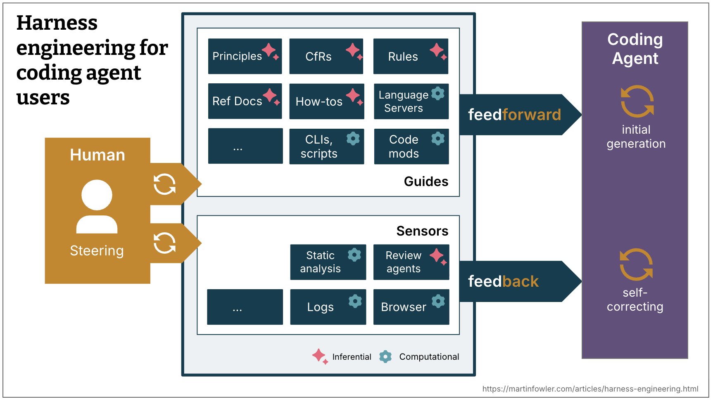
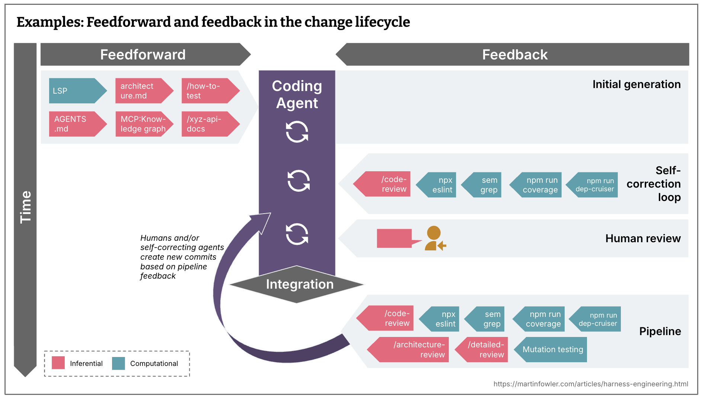
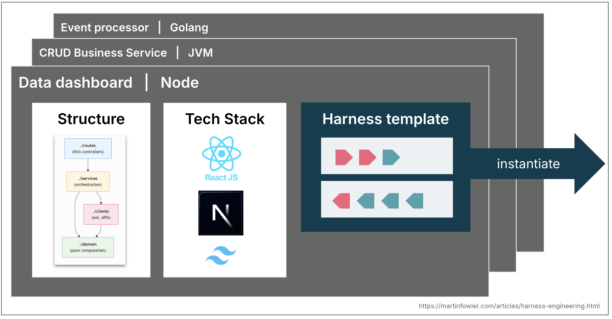

Harness Engineering：AI 编码智能体的置信度工程实践
作者：Birgitta Böckeler，Thoughtworks 杰出工程师，AI 辅助交付专家（20+ 年开发经验）。原文发表于 2026 年 4 月 2 日，Martin Fowler 网站。
一、背景：为什么需要 Harness Engineering？
AI 编码智能体（coding agent）带来了一个根本性信任问题：LLM 是非确定性的，它不理解你的代码上下文，它以 token 的方式思考。作为软件工程师，我们天然对 AI 生成的代码存在信任屏障。
Birgitta Böckeler 在本文中提出了一个心智模型，核心公式：
Agent = Model + Harness
Harness（中文可译为「挽具」或「控制系统」）指的是智能体中除了模型本身之外的一切——系统提示词、代码检索机制、编排系统，以及用户为自己用例构建的外部 harness。

图 1：术语「Harness」在不同上下文中的含义各不相同
二、核心框架：前馈 + 反馈 = 自我纠正
Harness 的设计围绕两个核心机制：
Guide（前馈控制）
在智能体行动之前进行引导，提前预判并预防不良行为。前馈控制提高智能体第一次就做对的概率。
Sensor（反馈控制）
在智能体行动之后观察结果，帮助其自我纠正。高效的 sensor 会输出专门为 LLM 优化过的信号——例如自定义 linter 消息包含自我纠正指令，这是一种正向的 prompt injection。
只有反馈没有前馈 → 智能体会不断重复相同错误
只有前馈没有反馈 → 智能体会制定规则但从不知道这些规则是否有效

图 2：Harness 工程总览——前馈（Guide）、反馈（Sensor）与 Steering Loop
三、计算的 vs 推断的：两种执行类型
Guide 和 Sensor 各有两种执行类型：
| 类型 | 特性 | 示例 |
|---|---|---|
| Computational（计算的） | 确定性，CPU 执行，毫秒级，结果可靠 | 测试、linter、类型检查、结构分析 |
| Inferential（推断的） | 语义分析，GPU/NPU 执行，较慢且非确定性 | AI 代码评审、「LLM as judge」 |
计算型 Sensor 足够便宜，可以在每次变更时运行。推断型 Sensor 虽然更贵且非确定性，但在使用足够强的模型时，可以显著提高信任度。
四、时序策略：保持质量左移
持续集成的团队面临的挑战是如何根据成本、速度和关键性，将测试、检查和人工审查分布到开发时间线上。当目标是持续交付时，每一个提交状态最好都是可部署的——你希望检查尽可能左移，发现问题越早，修复成本越低。

图 3：变更生命周期中的前馈与反馈分布
持续漂移与健康 Sensor
除了变更生命周期，还需要持续运行的 Sensor 来监控累积性漂移：
- 死代码检测
- 测试覆盖质量分析
- 依赖漏洞扫描
- 运行时反馈：监控 SLO 降级并提出改进建议

图 4：持续反馈传感器示例
五、Harness 的三种类型

图 5：Harness 的三种类型
1. Maintainability Harness（可维护性 Harness）
这是目前最容易构建的 harness 类型，因为有大量现成的工具可用。
Birgitta 将常见编码智能体失败模式映射到了不同 Sensor 上：
- 计算型 Sensor 可靠捕获：重复代码、循环复杂度、缺失测试覆盖、架构漂移、风格违规
- LLM 可部分解决（但成本高、非确定性）：语义重复代码、冗余测试、暴力修复、过度工程
- 两者都难以可靠捕获：问题误诊、过度工程、不必要的功能、对指令的误解——这些需要在人工监督下解决
2. Architecture Fitness Harness（架构 Fitness Harness）
定义和检查应用架构特性的 Guide 和 Sensor，本质上是 Fitness Functions：
- 前馈：Skills 传递性能需求 → 性能测试反馈性能改善或退化
- 前馈：描述可观测性编码规范（日志标准）→ 调试时要求智能体反思日志质量
3. Behaviour Harness（行为 Harness）
这是最难的部分——如何引导和感知应用的功能行为是否符合预期？
当前大多数高自主性编码智能体的做法：前馈用功能规格说明，反馈靠 AI 生成的测试套件是否通过。这种方法对 AI 生成测试的信任还不够。
Thoughtworks 一些同事在特定领域使用 approved fixtures 模式取得了不错效果，但适用范围有限。
六、Steering Loop：人在循环中的角色
人类在 harness 系统中的角色是持续迭代和改进 harness——每当某个问题多次出现，就改进前馈或反馈控制，使其在未来减少发生概率甚至完全预防。
Steering loop 中也可以用 AI 来改进 harness：
- 智能体可以帮助编写结构性测试
- 从观察到的模式生成规则草案
- 搭建自定义 linter 的脚手架
- 从代码库考古中创建操作指南
七、Ashby 定律与 Harness 模板

图 6：企业常见的 80% 服务拓扑 → 未来的 Harness 模板
Ashby 必要多样性定律：调节器的多样性必须至少与被调节系统一样多。LLM 可以产生几乎任何东西，但承诺一个拓扑会收窄这个空间，使全面的 harness 更容易实现。
企业级团队通常有覆盖 80% 需求的服务拓扑（API 业务服务、事件处理服务、数据仪表盘）。这些拓扑未来可能演化为 Harness 模板——一组捆绑的 Guide 和 Sensor，将编码智能体约束到特定拓扑的结构、规范和技术栈上。
八、核心洞察与实践建议
「好的 harness 的目标不一定是完全消除人类输入，而是将人类输入引导到最需要人类判断的地方。」
人类开发者带来的隐性 harness：吸收了规范和良好实践、感受到复杂性的认知痛苦、知道自己的名字会出现在提交记录上、理解团队正在努力实现什么。
编码智能体没有这些：没有社会责任感、没有对 300 行函数的厌恶感、没有「我们这里不这样做」的直觉、没有组织记忆。
九、行业案例
- OpenAI 团队：用自定义 linter 和结构性测试强制执行分层架构，定期「垃圾回收」扫描漂移并让智能体建议修复
- Stripe：pre-push hooks 基于启发式运行相关 linter，「shift feedback left」是关键策略，blueprints 将反馈传感器集成到智能体工作流中
- Mutation testing 和结构性测试：之前未被充分利用，现在正在复兴的计算型反馈传感器
十、开放问题
- 如何保持 harness 的内聚性，避免 Guide 和 Sensor 相互矛盾？
- 当指令和反馈信号指向不同方向时，智能体能做出合理的权衡吗？
- 如果 Sensor 从不触发，这是高质量的信号还是检测机制不足？
- 我们需要一个类似于代码覆盖率的方法来评估 harness 的覆盖率和质量
- 构建这个外部 harness 正在成为一项持续的工程实践，而非一次性配置
附录：论文信息
| 项目 | 内容 |
|---|---|
| 标题 | Harness engineering for coding agent users |
| 作者 | Birgitta Böckeler |
| 机构 | Thoughtworks |
| 发表 | Martin Fowler Articles，2026-04-02 |
| 标签 | generative AI |
一点思考
这篇文章最有价值的地方在于它将工程思维（测试、linter、Fitness Functions）与 AI 时代的新问题（非确定性、自我纠正）做了一个系统性整合。
「Agent = Model + Harness」这个公式简洁但深刻：模型的能力有上限，但 harness 的工程改进空间几乎是无限的。随着更多团队积累经验，harness engineering 很可能成为软件工程的一个正式子领域。